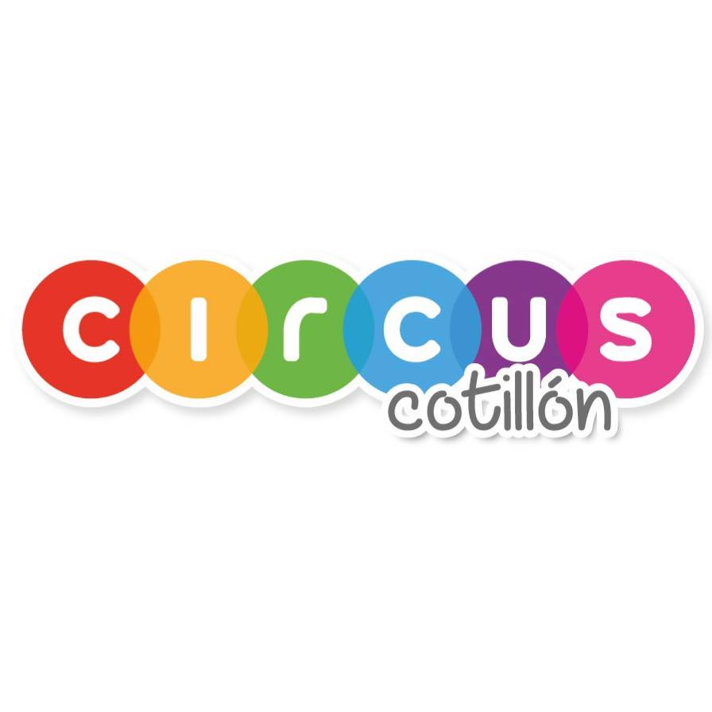

Acerca de
Hola! mi nombre es Patricio Colella, y soy un apasionado por la programacion en cualquiera de sus ambitos, y, en este caso especifico, por el desarrollo web! Termine el bootcamp de fullstack developer en Henry, y estoy listo para ofrecer mis servicios como fullstacker, principalmente orientado a backend pero me desenvuelvo bien en front! Amo la logica abstracta que tiene todo el back, y la logica que se puede hacer en el front con tecnologias como react. Espero que mi perfil sea de su agrado!- React
- Postgress
- Sequelize
- javaScript
- Express
- jest ( o alguna tecnologia relacionada a testing)
- mongo
- angular
Experiencia

FullStack Developer
Freelance sept 2022 - actualidad - 2 meses Argentina,San LuisEducacion

Escuela tecnico Nº26 Gdor. Elias Adre
Tecnico en Equipos e Instalaciones Electromecanicas 2012-2018
Universidad Nacional de San Luis
Licenciatura en ciencias de la computacion 2019-actualidad
Bootcamp SoyHenry
Desarrollador FullStack 2022-2022
Argentina Programa
Desarrollador FullStack 2022-actualidadHard Skills & Soft Skills
Proyectos
Proyecto Individual-FoodApp
Primer proyecto realizado en Henry para
terminar la etapa individual. Simulacion de
restaurante virtual
CodeBug
Esta pagina representa un espacio de consultas
para aquellos ingresantes al mundo de la
programación.
Con una interfaz amigable y entendible para
cualquiera.
Además de ser el proyecto requerido por Henry
para completar la aprobación
Circus Cotillon
A pedido de la empresa Circus Cotillon, esta pagina web fue diseñada con el
fin de administrar las compras realizadas a dicha empresa